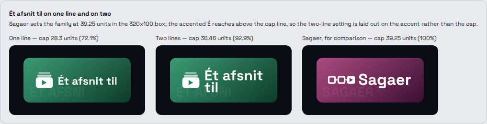
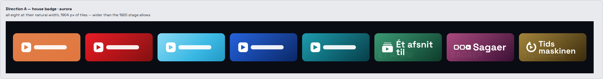
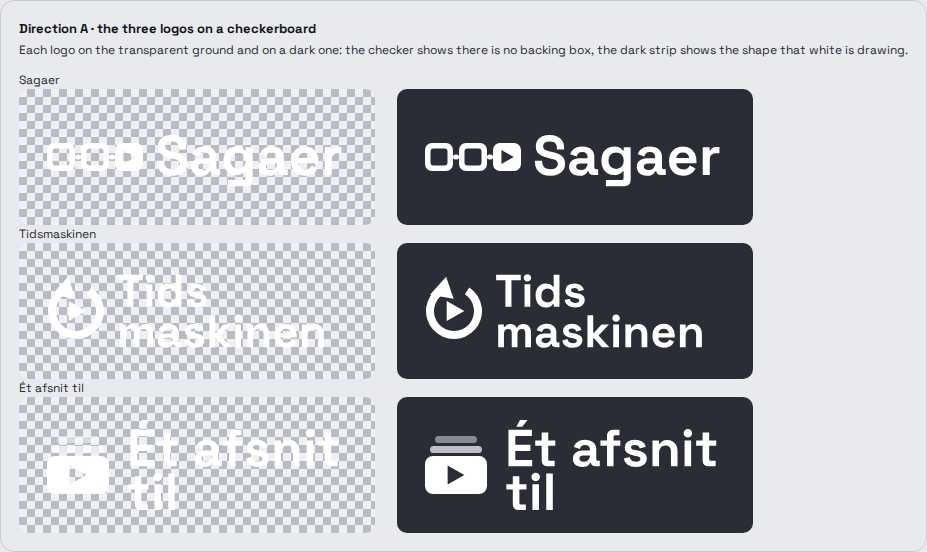
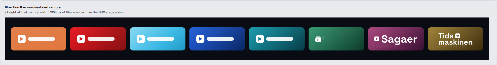
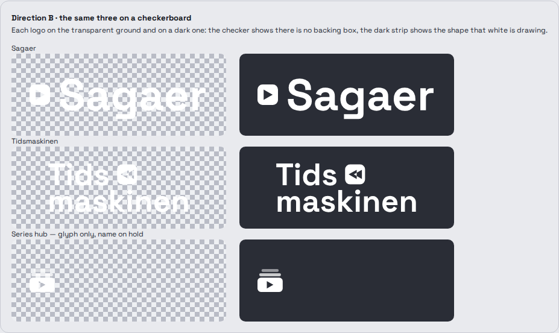
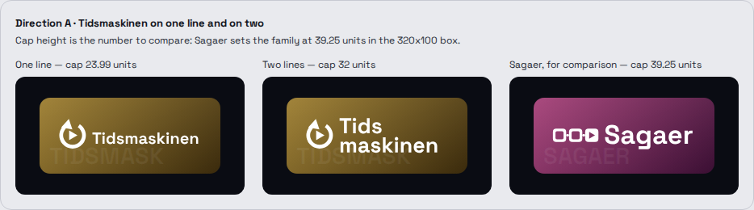
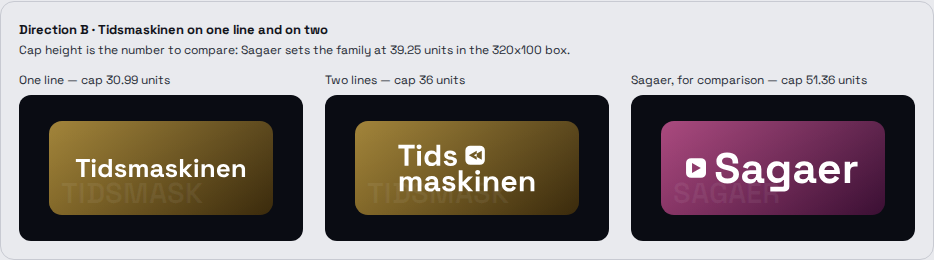
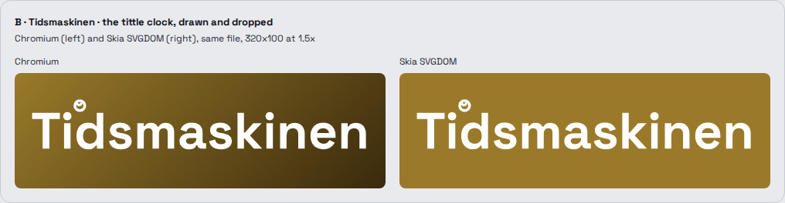

Two directions across three collections for Ravilo's Home rail, drawn on the real
tile: 224 × 94 dp, radius 13, the brand gradient at its authored angle, the 8 % sheen, the 6 %
watermark, the logo fitted inside padding_logo, and the focus state at scale 1.08 with
a 3 dp ring and a 22 dp glow.
upload/et-afsnit-til.svg. Direction B is frozen where it stood — its
hub tile still carries the mark and the empty name slot it was drawn with during the hold, and it
gets nothing more. Where this document compares the two directions below, it is comparing them as
they were put to the owner.

brand_color as a CSS-accurate linear-gradient at its authored
angle; over it a white 8 % corner-to-corner sheen, then the name's first 8 characters uppercased
in Space Grotesk Bold 29 sp at white 6 %, inset 12 left and 8 bottom; then the logo, fitted.#8E82FF, Daylight #5B4EE0 — and a 22 dp glow in the gradient's first
stop at 55 % alpha. The ring is chrome and never the brand colour.viewBox="0 0 320 100", role="img",
an aria-label carrying the exact name. No <text, no
<style, no class=, no <filter, no
<image, no <foreignObject, no <script, no
href of any kind. Every letter is an outlined <path>.A white mark, then a white wordmark: the shape every logo already on the rail has. Each mark varies the play glyph so it says what the collection is — the series hub a stack of episode frames, Sagaer three frames linked in a row, Tidsmaskinen a rewind ring around the play glyph.


The lettering carries the logo, with one small solid glyph beside the word. It is a handsome family of its own and it is legible at every size drawn — and it breaks the rail's pattern, which is visible the moment the eight tiles are seen together.


| A — house badge | B — wordmark-led | |
|---|---|---|
| Beside the five existing tiles | Continues the pattern | Breaks it, deliberately |
| Sagaer cap height | 39.25 units | 51.36 units |
| Tidsmaskinen, best cap height | 32 units, two lines | 36 units, two lines |
| Cap height held across the family | 82 % | 70 % |
| The series hub without its name | Mark reads on its own | Nothing carries the tile |
| Ét afsnit til, once named | 92.9 % of Sagaer's cap, on two lines | not drawn — B was frozen at the pick |
| Room for a 13-character name | Two lines beside the mark | Two lines, full width |
The cap-height row is the one that decided the recommendation. A name of six letters and a name of twelve have to look like the same family on the same rail, and A holds them within 82 % of each other where B holds 70 % — because B spends the whole box on the short name and then has nowhere to go on the long one.
| Collection | brand_color | padding_logo | White on each stop |
|---|---|---|---|
| Ét afsnit til et-afsnit-til |
linear-gradient(135deg, #2a9168 0%, #0d3b2a 100%) |
{top:14, right:20, bottom:14, left:20} |
3.93 : 1 · 12.53 : 1 |
| Sagaer | linear-gradient(135deg, #a33b74 0%, #3a0f33 100%) |
{top:12, right:18, bottom:12, left:18} |
6.11 : 1 · 16.20 : 1 |
| Tidsmaskinen | linear-gradient(135deg, #9a7a2a 0%, #3a2a0c 100%) |
{top:12, right:18, bottom:12, left:18} |
4.05 : 1 · 13.85 : 1 |
Emerald, berry and brass. Each is 135deg and darker toward the bottom-right, like every neighbour. Each first stop is dark enough to carry a white wordmark at better than 3 : 1 and light enough to make a glow that is not mud, and each holds its edge against Daylight's near-white page. None of them lands on the orange, the red, the two blues, the teal or either focus violet.


Two lines, in both directions. The split is Tids / maskinen, which is
where the compound breaks. Both variants are kept in variants/ so the other can be
uploaded without another round.
The tittle of the first i as a clock face. It is the obvious wordmark-led device for a collection called the time machine, and it fails at the size it actually gets: the ring is 5.4 units in a 320-wide box, which is about 7.7 px on the tile, and it reads as a smudge. It also leaves the second i with an ordinary tittle, so the first one looks like a defect rather than a device. Chromium and Skia agree about it.

Direction B carries a solid rewind badge instead, which survives the same reduction — the test it passes is the one the tittle failed: the same silhouette class as Sagaer's link, which is legible at 13 px on the tile.
| State | Drawn |
|---|---|
| Each logo alone on its tile, 1× and 3×, unfocused and focused, both directions | 24 frames |
| The full rail, Aurora and Daylight, 1920 and 412, nothing focused and each new tile focused | 40 frames |
| The upload files through Skia's SVGDOM beside Chromium | 7 frames |
| One line against two, both directions | 2 frames |
| The recommended direction on a checkerboard | 2 frames |
| 10-foot focus, every focusable thing in frame | in every rail frame |
| Loading, empty, error, offline | not drawn — this round draws artwork, not a screen; the tile has no state of its own beyond focus |
| Danish and Faroese | no new string — the three names are the owner's own Danish, and the series hub's is unresolved |
#9c3268 remains the one-line change if
that is ever wanted.upload/et-afsnit-til.svg, and the watermark
ÉT AFSNI. Nothing is left open on this round.